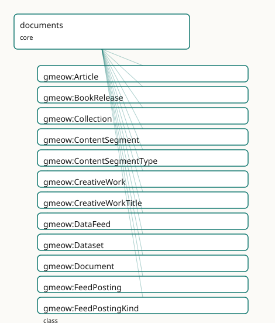

GMEOW Documents Module
- IRI: https://blackcatinformatics.ca/gmeow/slices/documents
- Tier: core
Group: core
What This Slice Covers
This slice owns 66 terms and contributes 186 mapping or projection rows. Use it when its terms match the native fact you want to preserve; use the linkage tables to see how those facts leave GMEOW for consumer vocabularies.
Dependencies
gmeow:slices/creative-worksgmeow:slices/kernelgmeow:slices/namesgmeow:slices/observationsgmeow:slices/placesgmeow:slices/standpointgmeow:slices/tags
Consumers
- Creative-works manifestations, the mail corpus attachments, depictions of any entity.
Local Map

Examples
Web Presence
- Source:
slices/core/documents/examples/web-presence.ttl - GMEOW terms:
gmeow:Expression,gmeow:Person,gmeow:ProfilePage,gmeow:WebPage,gmeow:WebSite,gmeow:Work,gmeow:embodies,gmeow:name,gmeow:pageOfSite,gmeow:pagePrincipalSubject
# SPDX-FileCopyrightText: 2026 Blackcat Informatics® Inc. <paudley@blackcatinformatics.ca>
# SPDX-License-Identifier: CC-BY-4.0
#
# Worked example: a web presence on the WEMI spine. A WebSite and
# its WebPages are concrete gmeow:Manifestations — so each embodies an Expression
# that realizes a Work, the same four-tier backing every published artifact
# carries. Pages belong to the site via gmeow:pageOfSite (⊑ partOf). The about
# page names a person as its gmeow:pagePrincipalSubject (⊑ isAbout), which makes
# it a gmeow:ProfilePage by INFERENCE — ProfilePage is a defined class (any
# WebPage whose principal subject is an Agent), so no manual typing is needed.
@prefix gmeow: <https://blackcatinformatics.ca/gmeow/> .
@prefix ex: <https://blackcatinformatics.ca/gmeow/examples/documents/> .
# --- The WEMI backing the whole site shares: one Work, one Expression.
ex:siteWork a gmeow:Work ;
gmeow:title "Blackcat Informatics® website"@en .
ex:siteContent a gmeow:Expression ;
gmeow:realizes ex:siteWork .
# --- The site (a Manifestation) and its pages (also Manifestations), each
# embodying the shared Expression.
ex:site a gmeow:WebSite ;
gmeow:embodies ex:siteContent .
ex:homepage a gmeow:WebPage ;
gmeow:pageOfSite ex:site ;
gmeow:embodies ex:siteContent .
# --- The about page: its principal subject is a person, so it IS a ProfilePage
# (≡ WebPage ⊓ ∃pagePrincipalSubject.Agent) without being typed as one.
ex:aboutMara a gmeow:WebPage ;
gmeow:pageOfSite ex:site ;
gmeow:pagePrincipalSubject ex:mara ;
gmeow:embodies ex:siteContent .
ex:mara a gmeow:Person ;
gmeow:name "Mara Okafor"@en .
Terms
Classes
| Term | Label | Definition |
|---|---|---|
gmeow:Article |
Article | A written work published in a periodical, blog, or scholarly venue. A specialization of gmeow:Work. |
gmeow:BookRelease |
Book Release | A concrete published edition or release of a book — an out-of-universe information object and rights-bearing publication artifact. A specialization of gmeow:Ma... |
gmeow:Collection |
Collection | An aggregation of resources published or curated as a unit — an anthology, album, gallery, or series bundle. A specialization of gmeow:Work whose members ride... |
gmeow:ContentSegment |
Content Segment | A structural part of a creative work, release, or installment — a chapter, section, scene, or episode. A gufo:Kind with distinct identity criteria (position an... |
gmeow:ContentSegmentType |
Content Segment Type | The structural type of a content segment — a VALUE vocabulary (individuals, never subclasses). Chapter, section, scene, and paragraph are examples; the set is... |
gmeow:CreativeWork |
Creative Work | The abstract umbrella category for intellectual and artistic creations in the WEMI spine — a Work, Expression, Manifestation, or Item. Formerly a flat gufo:Kin... |
gmeow:CreativeWorkTitle |
Creative Work Title | An appellation borne by a creative work — a document title, article headline, dataset name, or media title. Carries its own gmeow:nameLanguage and gmeow:nameSc... |
gmeow:DataFeed |
Data Feed | A published, ordered stream of items — a syndication feed (RSS/Atom/JSON Feed), a timeline, an activity feed. A specialisation of gmeow:Collection; its items r... |
gmeow:Dataset |
Dataset | A collection of data published as a unit. A specialization of gmeow:Work. |
gmeow:Document |
Document | An abstract intellectual work of bounded textual or digital content — the conceptual document, independent of any particular file, record, or report. A special... |
gmeow:FeedPosting |
Feed Posting | A short-form work published to a feed, timeline, or platform — a social-media post, a blog entry, a microblog note. A specialisation of gmeow:Work; its kind (s... |
gmeow:FeedPostingKind |
Feed Posting Kind | The kind of a syndicated posting — a VALUE vocabulary (individuals, never subclasses). Social, blog, microblog, forum, and status are examples; the set is open. |
gmeow:LiteraryWork |
Literary Work | An abstract long-form story or textual work — fiction, poetry, drama, or literary non-fiction. A specialization of gmeow:Work. |
gmeow:MediaObject |
Media Object | An image, audio, or video media file — a concrete published artifact. A specialization of gmeow:Manifestation. |
gmeow:Patent |
Patent | An abstract intellectual work describing an invention — the inventive concept as claimed, independent of any granted or filed document. A specialization of gme... |
gmeow:ProfilePage |
Profile Page | A web page whose principal subject is an agent — a person's or organization's profile/about page. A DEFINED class: any gmeow:WebPage whose gmeow:pagePrincipalS... |
gmeow:ReadingOrder |
Reading Order | A standpoint that supplies a subjective ordering for consuming segments of a work — publication order, internal chronology, author-recommended order, or fandom... |
gmeow:SerialInstallment |
Serial Installment | A single issue, episode, or chapter of a serial creative work — a comic issue, TV episode, magazine issue, or serial chapter. An out-of-universe publication ar... |
gmeow:SerialWork |
Serial Work | An ongoing authored work released over installments — a web serial, comic series, or magazine. A specialization of gmeow:Work. |
gmeow:Service |
Service | A system that provides one or more functions — a web API, hosted application, or online service. A specialization of gmeow:Work in the schema.org / creative-wo... |
gmeow:WebPage |
Web Page | A page on the web identified by a URL — a concrete published artifact. A specialization of gmeow:Manifestation. |
gmeow:WebSite |
Web Site | A web site — the published collection of web pages served under one identity (a domain, a project site, a personal homepage). A specialization of gmeow:Manifes... |
Properties
| Term | Label | Definition |
|---|---|---|
gmeow:abstract |
abstract | A summary of the content of a creative work. |
gmeow:bibliographicCitation |
bibliographic citation | A bibliographic reference for a creative work. |
gmeow:caption |
caption | A caption for a media object — the short text shown with an image, audio, or video (schema:caption). Non-functional. |
gmeow:captureDevice |
capture device | The physical device (camera, scanner, screen-capture hardware) that captured the media. Non-functional: multiple devices may be asserted (e.g. a composite imag... |
gmeow:captureTime |
capture time | The date and time when the image or media was captured. Non-functional: competing capture-time claims from different sources or EXIF vs. metadata may coexist w... |
gmeow:colourspace |
colourspace | The colourspace reference frame in which this media object's pixel values are expressed — sRGB, Adobe RGB, CMYK, CIE XYZ, etc. A subproperty of gmeow:hasRefere... |
gmeow:contentLanguage |
content language | The natural language of a work's content — the language a document, article, or page is written in. Distinct from the names slice's per-appellation language ta... |
gmeow:dateAccepted |
date accepted | The date a creative work was accepted (e.g. by a journal, conference, or repository). |
gmeow:dateAvailable |
date available | The date a creative work became or will become available. |
gmeow:dateCreated |
date created | The date a creative work was created. Distinct from datePublished (the issue/release date) and from the creation event's full temporal extent. |
gmeow:dateModified |
date modified | The date a creative work was last modified. |
gmeow:datePublished |
date published | The date a creative work was published or issued. |
gmeow:dateSubmitted |
date submitted | The date a creative work was submitted for review or publication. |
gmeow:depictedIn |
depicted in | Relates an entity to an image that depicts it. Inverse of gmeow:depicts. Non-functional: an entity may be depicted in many images. |
gmeow:depicts |
depicts | Relates an image (MediaObject) to an entity it depicts — the flat 80%-case shortcut, subproperty of gmeow:isAbout. Non-functional: an image may depict many ent... |
gmeow:extent |
extent | The size or duration of a creative work. |
gmeow:feedPostingKind |
posting kind | The kind of a posting — a value from the open gmeow:FeedPostingKind vocabulary (social, blog, microblog, …). Drives the schema projection (a social posting → s... |
gmeow:hasSegment |
has segment | Relates a whole (work, release, installment, or another segment) to a structural part. Non-functional: a work may have many segments. Inverse of gmeow:segmentO... |
gmeow:hasTitle |
has title | Relates a creative work to a structured gmeow:CreativeWorkTitle it bears; the creative-work-scoped specialization of gmeow:hasAppellation. Non-functional — a w... |
gmeow:identifier |
identifier | A formal identifier of a creative work, such as a DOI or patent number. |
gmeow:imageOrientation |
image orientation | The clockwise rotation of an image from its normal orientation, in degrees (EXIF convention: 0, 90, 180, 270). Functional: one orientation per manifestation. T... |
gmeow:mediaType |
media type | The IANA media (MIME) type of an artifact — 'text/plain', 'application/pdf', 'image/avif'. Universal: an email body part, a Manifestation, a Distribution all c... |
gmeow:pageOfSite |
page of site | Relates a web page to the web site it belongs to — a specialisation of gmeow:partOf, so site membership rides the universal mereology spine. The discrete page→... |
gmeow:pagePrincipalSubject |
page main entity | The principal subject a web page is primarily about — the one entity it represents (a person's profile page, an organization's about page). A functional specia... |
gmeow:pixelHeight |
pixel height | The height of a media object in pixels. Functional: one height per manifestation. |
gmeow:pixelWidth |
pixel width | The width of a media object in pixels. Functional: one width per manifestation. |
gmeow:quotedText |
quoted text | The inline text a work quotes when the quoted content is a passage rather than a linkable resource. Non-functional: several quoted passages may appear. |
gmeow:quotesContent |
quotes content | Relates a work (a posting, an article) to content it quotes — another posting, a passage, an external resource. Non-functional: a work may quote several source... |
gmeow:segmentIndex |
segment index | The position of this segment within its containing whole — 1-based by convention, but not enforced. |
gmeow:segmentOf |
segment of | A structural segment is part of a larger whole — a work, release, installment, or another segment. Transitive; inverse of gmeow:hasSegment. |
gmeow:segmentType |
segment type | The structural type of this segment — chapter, section, scene, etc. A value from the open gmeow:ContentSegmentType vocabulary. |
gmeow:sharesContent |
shares content | Relates a posting to content it shares or reposts — another posting, an article, a media object. The repost/share/boost edge. Non-functional. Projects to schem... |
gmeow:tableOfContents |
table of contents | A list of subunits of a creative work. |
gmeow:title |
title | The flat title literal of a creative work — the 80%-case shortcut for a single plain title. Promote to a structured gmeow:CreativeWorkTitle via gmeow:hasTitle... |
gmeow:transcript |
transcript | A text transcript of the spoken/audio content of a media object (schema:transcript). Distinct from gmeow:transcriptionOf, which is phonetic/script transcriptio... |
Individuals
| Term | Label | Definition |
|---|---|---|
gmeow:feedPostingKindBlog |
blog | A blog entry or article post. |
gmeow:feedPostingKindMicroblog |
microblog | A short microblog note (a tweet-like status). |
gmeow:feedPostingKindSocial |
social | A social-media post (a timeline/feed status). |
gmeow:segmentTypeBackMatter |
back matter | Supplementary material at the end of a book — appendix, bibliography, index. |
gmeow:segmentTypeChapter |
chapter | A major division of a written work. |
gmeow:segmentTypeFrontMatter |
front matter | Preliminary material at the beginning of a book — title page, preface, table of contents. |
gmeow:segmentTypeParagraph |
paragraph | A distinct section of writing covering a single theme. |
gmeow:segmentTypeScene |
scene | A continuous sequence of action in a dramatic or narrative work. |
gmeow:segmentTypeSection |
section | A distinct part or subdivision of a work. |
Linkages
- Rows: 186
- Projection profiles:
bibframe,bibo,dcat,dcterms,doap,exif,foaf,iiif,oai_dc,schema-org,sioc,vcard - External vocabularies:
bibframe,bibo,cc,dc,dcat,dcmitype,dcterms,doap,exif,foaf,gxv,iiif,pav,prov,qb,rdf,schema,sioc,vcard,wd
| Source | Kind | Profile | Predicate/Relation | Target | Evidence |
|---|---|---|---|---|---|
gmeow:Article |
equivalence | - |
rdfs:subClassOf | bibo:AcademicArticle | gmeow-classes.sssom.tsv; gmeow:eqClasses019; confidence 1 |
gmeow:Article |
equivalence | - |
owl:equivalentClass | schema:Article | gmeow-classes.sssom.tsv; gmeow:eqClasses017; confidence 1 |
gmeow:Article |
equivalence | - |
rdfs:subClassOf | schema:BlogPosting | gmeow-classes.sssom.tsv; gmeow:eqClasses021; confidence 0.9 |
gmeow:Article |
equivalence | - |
rdfs:subClassOf | schema:NewsArticle | gmeow-classes.sssom.tsv; gmeow:eqClasses020; confidence 1 |
gmeow:Article |
equivalence | - |
rdfs:subClassOf | schema:ScholarlyArticle | gmeow-classes.sssom.tsv; gmeow:eqClasses018; confidence 1 |
gmeow:Article |
equivalence | - |
skos:closeMatch | wd:Q191067 | gmeow-wikidata.sssom.tsv; gmeow:eqWikidata032; confidence 0.85 |
gmeow:BookRelease |
equivalence | - |
skos:broadMatch | schema:Book | gmeow-creative-works.sssom.tsv; gmeow:eqCw024; confidence 0.85 |
gmeow:BookRelease |
equivalence | - |
skos:closeMatch | schema:Book | gmeow-narrative.sssom.tsv; gmeow:eqNarrative001; confidence 0.8 |
gmeow:Collection |
equivalence | - |
skos:closeMatch | dcmitype:Collection | gmeow-dublin-core.sssom.tsv; gmeow:eqDcType010; confidence 0.85 |
gmeow:ContentSegment |
equivalence | - |
skos:narrowMatch | schema:Chapter | gmeow-narrative.sssom.tsv; gmeow:eqNarrative009; confidence 0.7 |
gmeow:CreativeWork |
equivalence | - |
skos:closeMatch | bibframe:Work | gmeow-classes.sssom.tsv; gmeow:eqClasses028; confidence 0.8 |
gmeow:CreativeWork |
equivalence | - |
skos:relatedMatch | cc:Work | gmeow-rights.sssom.tsv; gmeow:eqRights183; confidence 0.6 |
gmeow:CreativeWork |
equivalence | - |
skos:closeMatch | gxv:SourceDescription | gmeow-genealogy.sssom.tsv; gmeow:eqGenealogy051; confidence 0.85 |
gmeow:CreativeWork |
equivalence | - |
skos:closeMatch | prov:Entity | gmeow-provenance.sssom.tsv; gmeow:eqProvenance006; confidence 0.6 |
gmeow:CreativeWork |
equivalence | - |
owl:equivalentClass | schema:CreativeWork | gmeow-classes.sssom.tsv; gmeow:eqClasses015; confidence 1 |
gmeow:CreativeWork |
equivalence | - |
skos:closeMatch | schema:CreativeWork | gmeow-creative-works.sssom.tsv; gmeow:eqCw022; confidence 0.8 |
gmeow:CreativeWork |
equivalence | - |
skos:closeMatch | wd:Q17537576 | gmeow-wikidata.sssom.tsv; gmeow:eqWikidata031; confidence 0.8 |
gmeow:CreativeWorkTitle |
equivalence | - |
owl:equivalentClass | bibframe:Title | gmeow-properties.sssom.tsv; gmeow:eqProperties077; confidence 0.9 |
gmeow:CreativeWorkTitle |
equivalence | - |
skos:broadMatch | schema:name | gmeow-names.sssom.tsv; gmeow:eqNames051; confidence 0.6 |
gmeow:DataFeed |
equivalence | - |
skos:closeMatch | schema:DataFeed | gmeow-classes.sssom.tsv; gmeow:eqClasses056; confidence 0.85 |
gmeow:Dataset |
equivalence | - |
skos:closeMatch | dcmitype:Dataset | gmeow-dublin-core.sssom.tsv; gmeow:eqDcType002; confidence 0.9 |
gmeow:Dataset |
equivalence | - |
skos:closeMatch | qb:DataSet | gmeow-aggregation.sssom.tsv; gmeow:eqAgg002; confidence 0.9 |
gmeow:Dataset |
equivalence | - |
owl:equivalentClass | schema:Dataset | gmeow-classes.sssom.tsv; gmeow:eqClasses023; confidence 1 |
gmeow:Dataset |
equivalence | - |
skos:closeMatch | wd:Q1172284 | gmeow-wikidata.sssom.tsv; gmeow:eqWikidata034; confidence 0.85 |
| ... | ... | ... | ... | ... | 162 more rows |
Guide
Documents — works, releases, segments, and the depiction spine
Slice:
https://blackcatinformatics.ca/gmeow/slices/documents· tier: core The everyday creative-work vocabulary: what got written, released, segmented, titled, and pictured.
Creative works and document metadata — articles, patents, datasets, media, web pages (the schema.org / BIBO / BIBFRAME superset layer).
This slice furnishes the working subkinds of the four-tier WEMI spine:
gmeow:Document, gmeow:Article, gmeow:Patent, gmeow:Dataset,
gmeow:LiteraryWork, gmeow:SerialWork, gmeow:Collection, and gmeow:Service
specialize gmeow:Work (the abstract creation); gmeow:MediaObject, gmeow:WebPage,
gmeow:BookRelease, and gmeow:SerialInstallment specialize gmeow:Manifestation
(the concrete artifact). The umbrella gmeow:CreativeWork is a Category, not a Kind —
identity criteria live on the tiers, never on the umbrella.
Aboutness is kept honest by the tags-slice trichotomy (Principle 9): rdf:type says
what a thing is, gmeow:hasTag says what someone labelled it, and gmeow:isAbout
says what it concerns — three axes, property-disjoint, never collapsed.
gmeow:depicts is the image-shaped arm of isAbout, and gmeow:ContentSegment gives
every work structural decomposition without inventing per-genre part classes. Reading
order, finally, is a standpoint (gmeow:ReadingOrder) — publication order and
internal chronology coexist as subjective orderings, never canonical truth.
Works and their structure
gmeow:CreativeWork
The abstract umbrella Category for intellectual and artistic creations across the WEMI
spine. Formerly a flat Kind (pre WEMI spine); now a Category so each of the four tiers
beneath it can be a gufo:Kind with its own identity criteria. Carries the flat
metadata properties (gmeow:title, gmeow:identifier, gmeow:datePublished, the DC
date and description refinements).
gmeow:ContentSegment
A structural part of a work, release, or installment — chapter, section, scene, episode — a genuine Kind whose identity is position-and-type within a containing whole. One class for all segments: the kind of segment is a value, never a subclass.
gmeow:hasSegment · gmeow:segmentOf
The segment mereology, specializing the universal gmeow:hasPart/gmeow:partOf
spine. segmentOf is transitive — a scene of a chapter of a book is a segment of the
book; hasSegment is its non-functional inverse.
gmeow:segmentType · gmeow:segmentIndex
Per-segment classification and position: segmentType points (functionally) into the
open gmeow:ContentSegmentType value vocabulary (chapter, section, scene, paragraph,
front matter, back matter — seeds, not a closed enum, Principle 9); segmentIndex is a
1-based-by-convention integer.
gmeow:CreativeWorkTitle · gmeow:hasTitle
The structured title: an Appellation subkind carrying its own gmeow:nameLanguage and
gmeow:nameScript, so co-equal multilingual titles ("The Matrix" / "黑客帝国") are
separate first-class objects — never alternateName subordinates, none primary
(Principle 9). Superseded titles set gmeow:displayable false instead of being deleted
(Principle 10). The flat gmeow:title literal remains the 80 %-case shortcut.
gmeow:ReadingOrder
A gmeow:Standpoint subkind that supplies a subjective consumption ordering for the
segments of a work — publication order, internal chronology, author-recommended,
fandom. Claims are annotated gmeow:accordingTo a ReadingOrder; no order is ever
ontology truth.
Syndicated content
gmeow:FeedPosting · gmeow:feedPostingKind · gmeow:quotesContent · gmeow:sharesContent · gmeow:DataFeed
The syndication surface (MoveAction projection). A gmeow:FeedPosting is a short-form work published
to a feed or platform — its kind (gmeow:feedPostingKind: social / blog / microblog)
is an open value, never a subclass (P9), and drives the schema split
(schema:SocialMediaPosting vs schema:BlogPosting). gmeow:quotesContent (with the
inline gmeow:quotedText) becomes schema:Quotation + schema:citation;
gmeow:sharesContent is the repost/boost edge → schema:sharedContent /
sioc:links_to. A gmeow:DataFeed is a published ordered item stream (RSS/Atom/JSON
Feed, a timeline) whose members ride the hasPart spine → schema:DataFeed /
dataFeedElement / DataFeedItem. FeedPostings resolve the email slice's declared
SIOC partiality: a posting IS a sioc:Post, so email is no longer SIOC's only
consumer. (gmeow:Posting in the finance slice is an unrelated ledger term — the feed
posting is deliberately FeedPosting.)
Web presence
gmeow:WebSite · gmeow:pageOfSite · gmeow:pagePrincipalSubject · gmeow:ProfilePage
The web-presence model. A gmeow:WebSite is the published collection; a
gmeow:WebPage belongs to it via gmeow:pageOfSite (a subproperty of partOf, so
site membership rides the universal mereology — the discrete hierarchy a breadcrumb
trail walks). gmeow:pagePrincipalSubject (functional, a subproperty of isAbout) names
the one entity a page principally represents. gmeow:ProfilePage is a defined
class — any WebPage whose pagePrincipalSubject is a gmeow:Agent — so
schema:ProfilePage / schema:WebSite / schema:mainEntityOfPage and the
BreadcrumbList/ListItem walk all derive structurally, never from stored
navigation config.
gmeow:contentLanguage
The natural language of a work's body — distinct from the names slice's
per-appellation language tag, which is the language of a name. Non-functional (a
multilingual work has several); projects to schema:inLanguage / schema:iso6391Code
by reconstructing the BCP-47 / ISO 639-1 code from the gmeow:Language.
Manifestations and the image-depiction spine
gmeow:MediaObject
An image, audio, or video file — a concrete Manifestation carrying the technical
metadata of the design: gmeow:pixelWidth/gmeow:pixelHeight (functional),
gmeow:imageOrientation (EXIF degrees — the transform math is solver work,
Principle 12), gmeow:captureTime (non-functional: EXIF and catalogue claims coexist
with confidence), and gmeow:captureDevice. Declares [gmeow:requiresFrame](../reference/properties/gmeow-requiresFrame.md)
[gmeow:colourspace](../reference/properties/gmeow-colourspace.md) at warning severity (Principle 11).
gmeow:depicts · gmeow:depictedIn
The flat depiction foundation (gathered here by the dependency refactor): any
MediaObject can depict any Entity with zero image machinery, as a subproperty of
gmeow:isAbout. The pair gmeow:pairsWith the gmeow:DepictionUsage relator in the
images extension — promote when context, audience, period, confidence, or evidence of
the depiction matters (regions and scene graphs live there too).
gmeow:colourspace
The colourspace reference frame of a media object's pixel values — sRGB, Adobe RGB,
CMYK — a subproperty of gmeow:hasReferenceFrame (Principle 11: a pixel value is
meaningless without its frame). Deliberately not OWL-functional so merged standpoints
never trigger owl:sameAs collapse; single-valuedness is SHACL's job.
gmeow:BookRelease · gmeow:SerialInstallment
Concrete publication artifacts: an edition or release of a book, and a single issue,
episode, or chapter of a serial. Both are out-of-universe, rights-bearing
Manifestations, held strictly apart from any in-universe narrative frame they source
(linked via gmeow:sourceFor).
Solver layer & alignment
Pixel-space computation — orientation transforms, colourspace conversion, derived thumbnails — belongs to the solver layer (Principle 12); the slice records the claims and their frames. The slice supersets schema.org, BIBO, and BIBFRAME by reference (Principle 5): aligned to, never imported.
Dependencies
Depends on kernel, creative-works (the WEMI spine), names (Appellation),
observations, places, standpoint (ReadingOrder), and tags (the isAbout
trichotomy). Consumed by creative-works manifestations, the mail-corpus attachments,
and depictions of any entity.